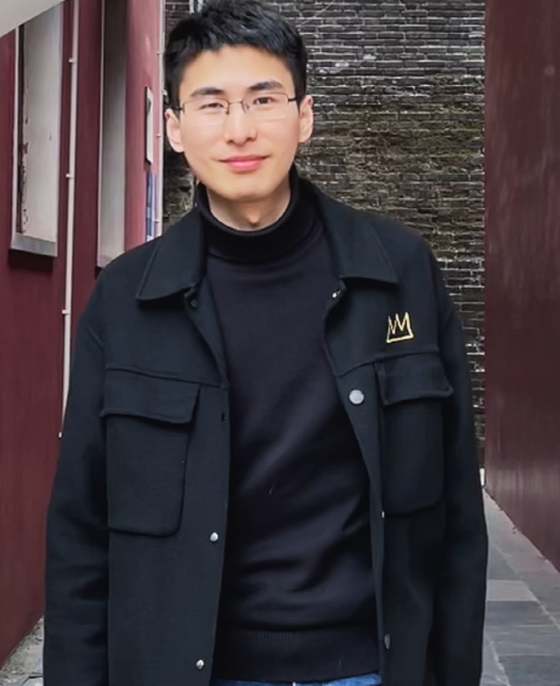

ASSISTANT RESEARCH FELLOW · MASTER'S SUPERVISOR
余大文 Dawen Yu
助理研究员 · 硕士生导师 · 摄影测量与遥感工学博士
福州大学 · 数字中国研究院（福建）
The Academy of Digital China, Fuzhou University
欢迎交流： 研究聚焦高分辨率遥感影像智能解译、建筑物提取与三维建模，以及地理空间人工智能。
个人简介 About
1995年生，福建顺昌人，福建省高层次人才，2023年12月于武汉大学摄影测量与遥感专业获得工学博士学位，主要研究方向为高分辨率遥感影像智能解译的理论与方法。在IEEE TGRS、ISPRS P&RS、Landslides等图像处理/摄影测量与遥感/地学领域的顶级期刊上发表论文多篇，3篇入选为ESI全球前1%高被引论文。攻博期间连续三年获得国家奖学金并同时连续三年获得专项奖学金。曾获第十六、十八届中国研究生数学建模竞赛一等奖，第一届天智杯人工智能挑战赛冠军，2021年测绘科学技术奖特等奖，2021年贵州省科学技术进步奖一等奖，2021年地理信息科技进步奖二等奖，2022年测绘科学技术奖二等奖，2023年武汉大学科研之星等。2024年起，主持国家自然科学基金项目和福建省自然科学基金项目等多项国家和省部级科研课题。
研究方向 Research Interests
核心课题
深度学习图像处理
遥感目标检测
地表覆盖分类
建筑物提取
三维建模
地灾遥感识别
研究关键词
Remote Sensing · Photogrammetry · Computer Vision · Deep Learning · Geospatial AI
经历 Experience
工作经历
- 助理研究员、硕士生导师，福州大学 数字中国研究院
学习经历
- 博士，武汉大学 遥感信息工程学院 摄影测量与遥感
- 硕士，武汉大学 遥感信息工程学院 摄影测量与遥感
- 本科，武汉大学 遥感信息工程学院 遥感科学与技术